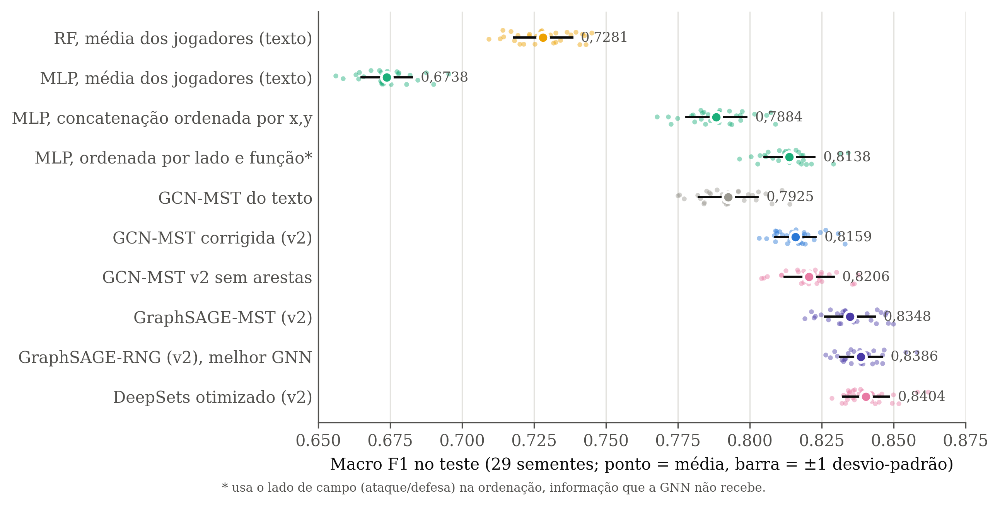
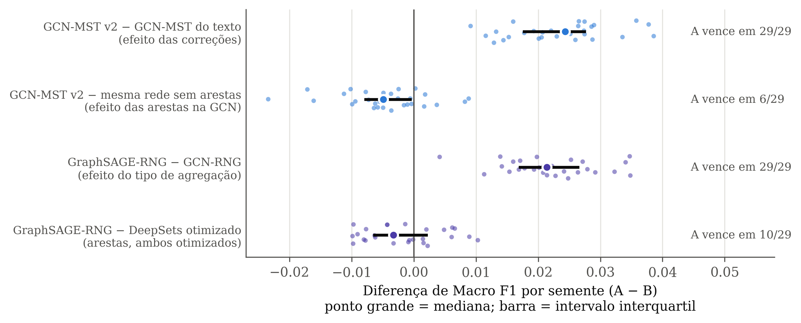
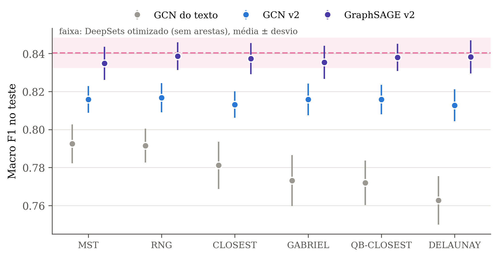
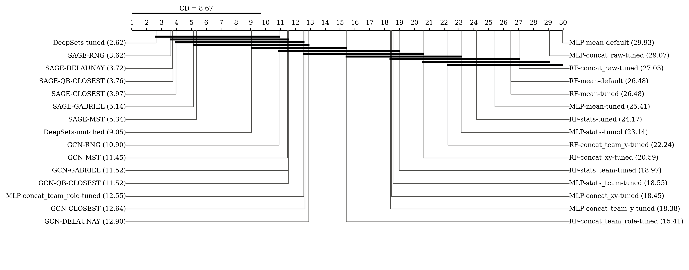
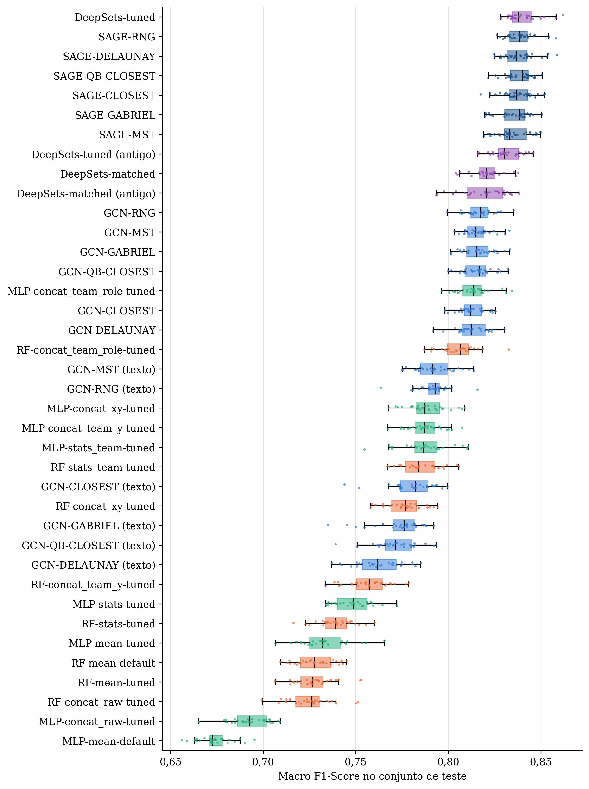
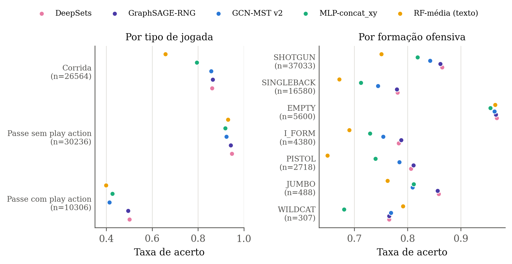
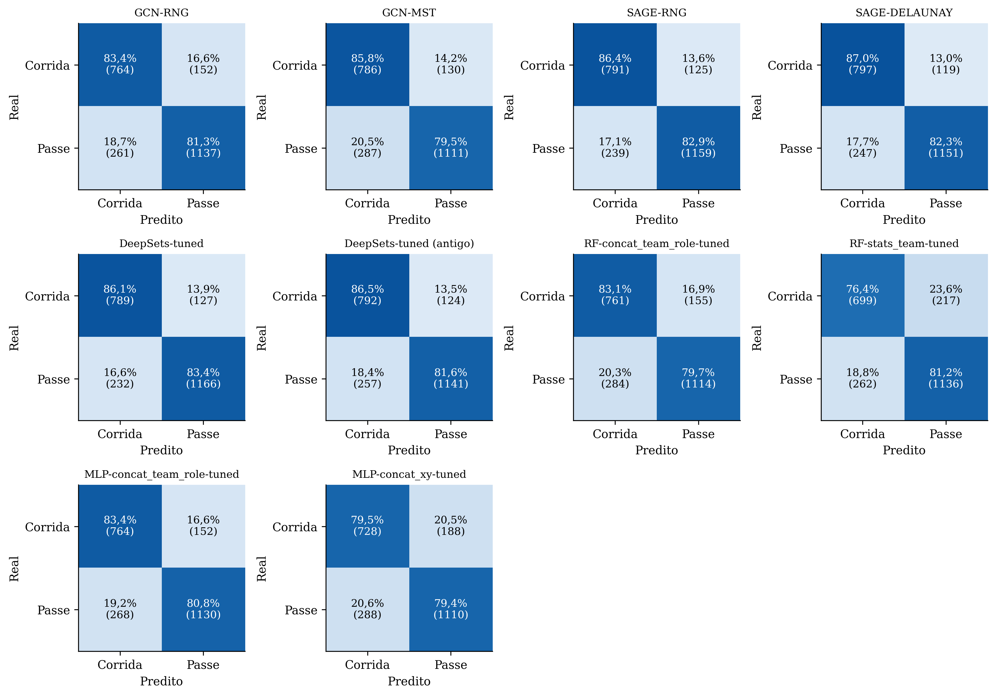

Resultado das 29 sementes com a mesma divisão de dados para todos os modelos, depois das correções na GCN (arestas nos dois sentidos, peso pela distância, tuning na validação, checkpoint correto e atributos padronizados) e da inclusão da GraphSAGE.
O melhor modelo não usa arestas. O DeepSets otimizado e a melhor GraphSAGE (RNG, 0,8386) empatam: a diferença é de 0,0017, a GraphSAGE vence em 10 de 29 sementes e o Wilcoxon com Holm dá p = 0,26.
A crítica do Prof. Marcos se confirmou. Trocar a média dos jogadores pela concatenação ordenada levou o MLP de 0,6738 para 0,7884. Grande parte da vantagem da GCN no texto vinha da informação que a média descartava.
As correções melhoraram a GCN em todas as topologias. A GCN-MST foi de 0,7925 para 0,8159 e venceu a versão do texto em 29 de 29 sementes. Na DELAUNAY, o ganho foi de 0,050.
Mesmo corrigida, a GCN fica abaixo de si mesma sem arestas. Com os mesmos hiperparâmetros, tirar as arestas leva a 0,8206 (a GCN vence em só 6 de 29 sementes; p de Holm = 0,006). A GCN mistura cada jogador com os vizinhos e perde informação individual.
A forma de agregar os vizinhos importa. A GraphSAGE, que dá pesos separados ao próprio jogador e aos vizinhos, supera a GCN em todas as 6 topologias (29 de 29 sementes na RNG). Ela chega ao nível do DeepSets, mas não passa dele.
A escolha da topologia quase não importa mais. No texto, a MST superava a DELAUNAY por 0,030. Na v2, todas as GCN ficam entre 0,8128 e 0,8167, e todas as GraphSAGE entre 0,8348 e 0,8386. A vantagem das topologias enxutas era, em boa parte, efeito das arestas em um sentido só.

| Modelo | Macro F1 | F1 corrida | F1 passe | Rank médio |
|---|---|---|---|---|
| DeepSets otimizado (v2) | 0,8404 ± 0,0080 | 0,8144 | 0,8664 | 2,62 |
| GraphSAGE-RNG (v2) | 0,8386 ± 0,0073 | 0,8130 | 0,8643 | 3,62 |
| GraphSAGE-DELAUNAY (v2) | 0,8383 ± 0,0087 | 0,8135 | 0,8630 | 3,72 |
| GCN-MST v2 sem arestas (DeepSets-matched) | 0,8206 ± 0,0085 | 0,7966 | 0,8447 | 9,05 |
| GCN-RNG (v2) | 0,8167 ± 0,0077 | 0,7872 | 0,8462 | 10,90 |
| GCN-MST (v2) | 0,8159 ± 0,0070 | 0,7900 | 0,8418 | 11,45 |
| MLP, ordenado por lado e função* | 0,8138 ± 0,0087 | 0,7843 | 0,8433 | 12,55 |
| GCN-MST do texto | 0,7925 ± 0,0102 | 0,7529 | 0,8321 | — |
| MLP, concatenação ordenada por x,y | 0,7884 ± 0,0105 | 0,7534 | 0,8233 | 18,45 |
| RF, média dos jogadores (texto) | 0,7281 ± 0,0102 | 0,6683 | 0,7880 | 26,48 |
| MLP, média dos jogadores (texto) | 0,6738 ± 0,0088 | 0,6061 | 0,7415 | 29,93 |
O RF e o MLP com a média, agora na mesma divisão da GCN, ficaram em 0,7281 e 0,6738, próximos dos 0,7319 e 0,6785 da Tabela 4.1. O rank médio vem do teste de Friedman com as 30 configurações do protocolo atual (as versões do texto e do protocolo anterior não entram, para não contar a mesma configuração duas vezes).
| Configuração | Macro F1 | Mín. | Máx. | F1 corrida | F1 passe | ms/jogada |
|---|---|---|---|---|---|---|
| DeepSets-tuned | 0,8404 ± 0,0080 | 0,8285 | 0,8619 | 0,8144 | 0,8664 | 0,95 |
| SAGE-RNG | 0,8386 ± 0,0073 | 0,8264 | 0,8581 | 0,8130 | 0,8643 | 1,18 |
| SAGE-DELAUNAY | 0,8383 ± 0,0087 | 0,8248 | 0,8587 | 0,8135 | 0,8630 | 1,32 |
| SAGE-QB-CLOSEST | 0,8380 ± 0,0072 | 0,8216 | 0,8506 | 0,8134 | 0,8625 | 1,24 |
| SAGE-CLOSEST | 0,8373 ± 0,0082 | 0,8176 | 0,8522 | 0,8129 | 0,8618 | 1,62 |
| SAGE-GABRIEL | 0,8354 ± 0,0087 | 0,8197 | 0,8506 | 0,8094 | 0,8613 | 1,17 |
| SAGE-MST | 0,8348 ± 0,0087 | 0,8191 | 0,8498 | 0,8085 | 0,8611 | 1,41 |
| DeepSets-tuned (antigo) | 0,8316 ± 0,0080 | 0,8159 | 0,8459 | 0,8062 | 0,8570 | 0,42 |
| DeepSets-matched | 0,8206 ± 0,0085 | 0,8040 | 0,8377 | 0,7966 | 0,8447 | 0,79 |
| DeepSets-matched (antigo) | 0,8186 ± 0,0128 | 0,7935 | 0,8382 | 0,7868 | 0,8505 | 0,37 |
| GCN-RNG | 0,8167 ± 0,0077 | 0,7993 | 0,8352 | 0,7872 | 0,8462 | 3,11 |
| GCN-MST | 0,8159 ± 0,0070 | 0,8033 | 0,8331 | 0,7900 | 0,8418 | 1,97 |
| GCN-GABRIEL | 0,8158 ± 0,0083 | 0,8014 | 0,8332 | 0,7859 | 0,8457 | 1,89 |
| GCN-QB-CLOSEST | 0,8158 ± 0,0077 | 0,7999 | 0,8324 | 0,7863 | 0,8452 | 1,82 |
| MLP-concat_team_role-tuned | 0,8138 ± 0,0087 | 0,7964 | 0,8342 | 0,7843 | 0,8433 | 0,05 |
| GCN-CLOSEST | 0,8132 ± 0,0070 | 0,7982 | 0,8254 | 0,7873 | 0,8391 | 3,30 |
| GCN-DELAUNAY | 0,8128 ± 0,0084 | 0,7919 | 0,8303 | 0,7828 | 0,8427 | 1,57 |
| RF-concat_team_role-tuned | 0,8055 ± 0,0095 | 0,7870 | 0,8327 | 0,7758 | 0,8351 | 2,31 |
| GCN-MST (texto) | 0,7925 ± 0,0102 | 0,7751 | 0,8138 | 0,7529 | 0,8321 | — |
| GCN-RNG (texto) | 0,7916 ± 0,0090 | 0,7637 | 0,8158 | 0,7529 | 0,8303 | — |
| MLP-concat_xy-tuned | 0,7884 ± 0,0105 | 0,7678 | 0,8089 | 0,7534 | 0,8233 | 0,05 |
| MLP-concat_team_y-tuned | 0,7875 ± 0,0091 | 0,7673 | 0,8076 | 0,7475 | 0,8276 | 0,04 |
| MLP-stats_team-tuned | 0,7873 ± 0,0136 | 0,7547 | 0,8108 | 0,7515 | 0,8232 | 0,05 |
| RF-stats_team-tuned | 0,7853 ± 0,0109 | 0,7671 | 0,8058 | 0,7449 | 0,8258 | 2,39 |
| GCN-CLOSEST (texto) | 0,7812 ± 0,0124 | 0,7439 | 0,7995 | 0,7392 | 0,8231 | — |
| RF-concat_xy-tuned | 0,7763 ± 0,0098 | 0,7580 | 0,7942 | 0,7406 | 0,8121 | 2,44 |
| GCN-GABRIEL (texto) | 0,7731 ± 0,0134 | 0,7349 | 0,7922 | 0,7284 | 0,8179 | — |
| GCN-QB-CLOSEST (texto) | 0,7720 ± 0,0117 | 0,7392 | 0,7935 | 0,7264 | 0,8176 | — |
| GCN-DELAUNAY (texto) | 0,7628 ± 0,0128 | 0,7371 | 0,7850 | 0,7173 | 0,8082 | — |
| RF-concat_team_y-tuned | 0,7568 ± 0,0114 | 0,7336 | 0,7786 | 0,7084 | 0,8052 | 2,33 |
| MLP-stats-tuned | 0,7485 ± 0,0100 | 0,7339 | 0,7722 | 0,7037 | 0,7934 | 0,06 |
| RF-stats-tuned | 0,7393 ± 0,0096 | 0,7163 | 0,7601 | 0,6828 | 0,7959 | 2,34 |
| MLP-mean-tuned | 0,7328 ± 0,0128 | 0,7067 | 0,7655 | 0,6766 | 0,7890 | 0,03 |
| RF-mean-default | 0,7281 ± 0,0102 | 0,7093 | 0,7450 | 0,6683 | 0,7880 | 2,43 |
| RF-mean-tuned | 0,7280 ± 0,0106 | 0,7064 | 0,7530 | 0,6663 | 0,7896 | 5,56 |
| RF-concat_raw-tuned | 0,7250 ± 0,0117 | 0,6995 | 0,7513 | 0,6623 | 0,7876 | 2,33 |
| MLP-concat_raw-tuned | 0,6931 ± 0,0103 | 0,6652 | 0,7092 | 0,6220 | 0,7642 | 0,03 |
| MLP-mean-default | 0,6738 ± 0,0088 | 0,6560 | 0,6954 | 0,6061 | 0,7415 | 0,04 |
Como todos os modelos usam a mesma divisão em cada semente, dá para comparar dois modelos semente a semente. Cada comparação abaixo isola uma única mudança.

| Comparação (A × B) | Dif. média | A vence | p (Holm) |
|---|---|---|---|
| GCN-MST v2 × GCN-MST do texto (correções) | +0,0234 | 29/29 | 1,0e−7 |
| GCN-MST v2 × mesma rede sem arestas (arestas na GCN) | −0,0048 | 6/29 | 0,006 |
| GraphSAGE-RNG × GCN-RNG (tipo de agregação) | +0,0219 | 29/29 | 1,0e−7 |
| GraphSAGE-RNG × DeepSets otimizado (arestas, ambos otimizados) | −0,0017 | 10/29 | 0,26 |
| GraphSAGE-MST × DeepSets otimizado | −0,0055 | 5/29 | 0,0009 |
| DeepSets v2 × DeepSets do protocolo anterior | +0,0088 | 26/29 | 1,7e−5 |
| DeepSets × MLP-concat_xy (melhor baseline estritamente justa) | +0,0520 | 29/29 | 1,0e−7 |
| DeepSets × MLP-concat_team_role (melhor baseline, com lado de campo) | +0,0266 | 29/29 | 1,0e−7 |
| GCN-RNG v2 × MLP-concat_team_role | +0,0029 | 20/29 | 0,19 |
Wilcoxon pareado por semente, com correção de Holm sobre as 27 comparações calculadas (9 gerais e 3 por topologia: correções, GraphSAGE × GCN e GraphSAGE × DeepSets). Com 29 sementes, o menor p possível no Wilcoxon exato é da ordem de 10−9; o 1,0e−7 é esse piso multiplicado pelo número de testes.
Leitura. Ver cada jogador individualmente é o que mais importa. A troca de mensagens, do jeito que foi testada, não acrescenta nada além disso: a GCN perde informação ao misturar e a GraphSAGE, que pode controlar o quanto usa dos vizinhos, só empata com o DeepSets.

| Topologia | GCN do texto | GCN v2 | Ganho | GraphSAGE v2 | GraphSAGE × DeepSets (p Holm) |
|---|---|---|---|---|---|
| MST | 0,7925 | 0,8159 | +0,023 | 0,8348 | −0,006 (0,0009) |
| RNG | 0,7916 | 0,8167 | +0,025 | 0,8386 | −0,002 (0,26) |
| CLOSEST | 0,7812 | 0,8132 | +0,032 | 0,8373 | −0,003 (0,17) |
| GABRIEL | 0,7731 | 0,8158 | +0,043 | 0,8354 | −0,005 (0,034) |
| QB-CLOSEST | 0,7720 | 0,8158 | +0,044 | 0,8380 | −0,002 (0,26) |
| DELAUNAY | 0,7628 | 0,8128 | +0,050 | 0,8383 | −0,002 (0,26) |
As topologias que mais ganharam com as correções são as mais densas (DELAUNAY, QB-CLOSEST, GABRIEL). Com cada aresta em um sentido só, um grafo denso passava muitas mensagens numa direção arbitrária. Nenhuma GraphSAGE supera o DeepSets; em MST e GABRIEL ela fica significativamente abaixo.
Tuning com Optuna 4.7.0, TPESampler(seed=42), 20 tentativas por estudo, divisão da semente 0 e objetivo igual ao Macro F1 na validação. O teste não foi usado. O mesmo espaço de busca valeu para os três modelos.
| Configuração | Canais | Camadas | Pooling | Pós-pooling | Peso nas arestas | F1 validação |
|---|---|---|---|---|---|---|
| GCN-MST | 256 | 1 | média | 2 | 1/(1+d) | 0,8317 |
| GCN-RNG | 64 | 2 | média+máx. | 1 | 1/(1+d) | 0,8331 |
| GCN-CLOSEST | 64 | 2 | média+máx. | 1 | 1/(1+d) | 0,8303 |
| GCN-GABRIEL | 64 | 1 | média | 1 | 1/(1+d) | 0,8318 |
| GCN-QB-CLOSEST | 64 | 1 | média | 1 | 1/(1+d) | 0,8288 |
| GCN-DELAUNAY | 64 | 1 | média | 1 | 1/(1+d) | 0,8272 |
| GraphSAGE-MST | 128 | 2 | média+máx. | 0 | 1/(1+d) | 0,8484 |
| GraphSAGE-RNG | 128 | 2 | máx. | 0 | 1/(1+d) | 0,8527 |
| GraphSAGE-CLOSEST | 64 | 3 | média+máx. | 1 | 1/(1+d) | 0,8521 |
| GraphSAGE-GABRIEL | 128 | 2 | máx. | 1 | 1/(1+d) | 0,8493 |
| GraphSAGE-QB-CLOSEST | 128 | 2 | máx. | 1 | 1/(1+d) | 0,8499 |
| GraphSAGE-DELAUNAY | 64 | 3 | média+máx. | 0 | 1/(1+d) | 0,8562 |
| DeepSets | 256 | 3 | média+máx. | 0 | — | 0,8516 |
O tuning escolheu o peso 1/(1+d) nas 12 configurações com arestas: quando a rede usa os vizinhos, vale ponderar pela distância. O pooling com máximo aparece em 9 das 13 escolhas. O melhor modelo foi o da época de maior Macro F1 na validação; a mediana dessa época ficou entre 30 e 135, e a paciência do early stopping foi de 30 épocas.
Friedman: χ² = 811,92, p = 3,6 × 10−152 (30 configurações, 29 sementes). No Nemenyi, a diferença crítica é de 8,67 posições: o DeepSets e as 6 GraphSAGE formam o grupo do topo. Por esse teste, que é conservador com 30 configurações, o DeepSets ainda não se separa da GCN-RNG (8,3 posições de distância). Os Wilcoxon pareados acima são mais sensíveis para as comparações de interesse.


Pedido do Prof. Jadson: separar jogadas triviais de jogadas difíceis. Juntei a predição de cada jogada de teste (gameId, playId) com os dados do plays.csv para cinco modelos: DeepSets, GraphSAGE-RNG, GCN-MST v2, MLP-concat_xy e o RF-média do texto. Cada jogada cai no teste em cerca de 4 das 29 sementes, então os totais abaixo contam predições (jogada × semente).

| Grupo de jogadas | DeepSets | GraphSAGE-RNG | GCN-MST v2 | MLP-concat_xy | RF-média (texto) |
|---|---|---|---|---|---|
| Corrida | 86,1% | 86,4% | 85,8% | 79,5% | 65,8% |
| Passe sem play action | 94,7% | 94,3% | 92,4% | 91,9% | 93,1% |
| Passe com play action | 50,1% | 49,5% | 41,4% | 42,7% | 39,9% |
| RPO (opção corrida/passe) | 63,1% | 62,5% | 61,6% | 56,8% | 41,9% |
| Não RPO | 87,0% | 86,8% | 84,3% | 82,1% | 77,9% |
| 1ª descida | 81,2% | 81,0% | 78,0% | 75,1% | 68,2% |
| 3ª descida | 93,2% | 93,2% | 92,6% | 90,4% | 87,3% |
| Formação EMPTY | 96,8% | 96,6% | 96,3% | 95,6% | 96,5% |
| Formação SINGLEBACK | 78,1% | 78,0% | 74,4% | 71,2% | 67,2% |
Passes sem play action, formação EMPTY (sem ninguém no backfield) e 3ª descida. Todos os modelos, até o RF com a média, acertam mais de 87%. A formação já denuncia a jogada.
Das 15.285 jogadas, 51,6% foram acertadas por todos os 5 modelos em todas as sementes em que caíram no teste.
Passes com play action são desenhados para parecer corrida no snap, e os melhores modelos acertam cerca de metade. As RPO deixam a decisão para depois do snap. Nenhuma das duas é decidível pela formação, nem por um especialista.
As 2,9% de jogadas que os 5 modelos erram sempre são 57% passes com play action (contra 15% no total), 19% RPO (contra 10,5%) e 47% SINGLEBACK (contra 25%).
A diferença entre os modelos aparece onde a formação carrega informação, mas é preciso ver os jogadores individualmente para extraí-la: nas corridas, o RF-média acerta 65,8% e o DeepSets, 86,1%.

Pergunta do Prof. Jadson sobre o uso em tempo real. Tempo por jogada com lote de 1 (mediana das 29 sementes).
| Modelo | ms por jogada | Dispositivo |
|---|---|---|
| MLP (qualquer representação) | 0,02–0,05 | CPU |
| DeepSets otimizado | 0,90 | GPU |
| GraphSAGE (6 topologias) | 1,1–1,6 | GPU |
| GCN v2 (6 topologias) | 1,6–3,4 | GPU |
| RF | 2,2–2,5 | CPU |
Todos ficam milhares de vezes abaixo dos até 40 segundos entre jogadas. A inferência não limita o uso durante a partida; o limite é usar só o quadro do snap. Os tempos foram medidos com três processos rodando ao mesmo tempo, então são valores conservadores.
Hoje no texto“superioridade da modelagem relacional”; a vantagem da GCN derivaria “da capacidade da GNN de interpretar a geometria espacial e a influência mútua dos jogadores”.
O que os dados sustentamRepresentar os jogadores individualmente é o fator decisivo (+0,11 a +0,17 sobre a média). A troca de mensagens não trouxe ganho além do DeepSets nas condições testadas.
Hoje no texto“topologias mais enxutas são as mais eficazes” e filtram “o ruído espacial redundante”.
O que os dados sustentamCom as arestas corrigidas, as topologias ficam a menos de 0,004 umas das outras. A diferença do texto vinha, em boa parte, das arestas em um sentido só.
Hoje no textoSó GCN; baselines com a média; tuning da GCN pela acurácia no teste.
O que os dados sustentamGCN, GraphSAGE e DeepSets com o mesmo protocolo e o mesmo orçamento de tuning na validação; baselines com sete representações. A forma de agregação importa: a GraphSAGE supera a GCN em todas as topologias.
Hoje no textoAnálise de erros só por classe.
O que os dados sustentamOs erros restantes se concentram em play action e RPO, jogadas feitas para enganar no snap. Isso dá um teto natural para qualquer modelo que use só a formação.
position, club, formação) codificados com LabelEncoder semana a semana; afeta todos os modelos igualmente.